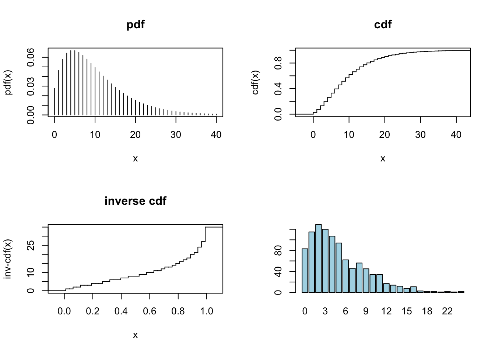

library(gamlss.demo)
gamlss.demo()<Tcl> Mikis Stasinopoulos
Bob Rigby
Gillian Heller
Fernanda De Bastiani
Niki Umlauf
gamlss.demo to plot distributionsgamlss.demo to plot distributions. First download the package gamlss.demo.Investigate how the following distributions change with their parameters:
Continuous distributions
PE for -\infty<y<\inftyGA for 0<y<\inftyBE for 0<y<1Discrete distributions
NBI for y = 0, 1, 2, 3,\ldotsBB for y = 0, 1, 2, 3, ..., nMixed distributions
ZAGA for 0 \leq y < \inftyBEINF for 0 \leq y \leq 1The package gamlss.dist (which is downloaded automatically with gamlss contains many distributions. Typing
will show all the available distributions in the gamlss packages. You can also explore the shape and other properties of the distributions. For example the following code will produce the pdf, cdf, inverse cdf and a histogram of a random sample generated from a gamma distribution:
PPP <- par(mfrow=c(2,2))
plot(function(y) dGA(y, mu=10 ,sigma=0.3),0.1, 25) # pdf
plot(function(y) pGA(y, mu=10 ,sigma=0.3), 0.1, 25) #cdf
plot(function(y) qGA(y, mu=10 ,sigma=0.3), 0, 1) # inverse cdf
hist(rGA(100,mu=10,sigma=.3)) # randomly generated valuesNote that the first three plots above can also be produced by using the function curve(), for example
To explore discrete distributions use:
PPP <- par(mfrow=c(2,2))
plot(function(y) dNBI(y, mu = 10, sigma =0.5 ), from=0, to=40,
n=40+1, type="h", main="pdf", ylab="pdf(x)")
cdf <- stepfun(0:39, c(0, pNBI(0:39, mu=10, sigma=0.5 )), f = 0)
plot(cdf,main="cdf", ylab="cdf(x)", do.points=FALSE )
invcdf <-stepfun(seq(0.01,.99,length=39), qNBI(seq(0.01,.99,
length=40), mu=10, sigma=0.5 ), f = 0)
plot(invcdf,main="inverse cdf",ylab="inv-cdf(x)",do.points=FALSE)
tN <- table(Ni <- rNBI(1000,mu=5, sigma=0.5))
r <- barplot(tN, col='lightblue')
Note that to find moments or to check if a distribution integrates or sums to one, the functions integrate() or sum() can be used. For example
will check that the distribution integrates to one, and
will give the mean of the distribution.
The pdf of a GAMLSS family distribution can also be plotted using the gamlss function pdf.plot(). For example
will plot the pdf’s of four gamma distributions `GA`(\mu, \sigma), all with \mu=10, but with \sigma=0.1, 0.5, 1 and 2, respectively.
Try plotting other continuous distributions, e.g. IG (inverse Gaussian), PE (power exponential) and BCT (Box-Cox t); and discrete distributions, e.g. NBI (negative binomial type I) and PIG (Poisson inverse Gaussian). Make sure you define the values of all the parameters of the distribution.
tse data.The data are for the eleven-year period 1 January 1988 to 31 December 1998. Continuously compounded returns in domestic currency were calculated as the first difference of the natural logarithm of the series. The objective is to fit a distribution to the Turkish stock exchange index.
R data file: tse in package gamlss.data of dimensions 2868 \times 6.
year
month
day
ret: day returns ret[t]=ln(currency[t])-ln(currency[t-1])
currency: the currency exchange rate
tl : day return ret[t]=log10(currency[t])-log10(currency[t-1])
purpose to show the gamlss family of distributions.
ret. Automatically choose the best fitting distribution according to AIC. Show the AIC for the different fitted distributions. Do any of the fits fail?(Note convergence problems!)
Repeat with k=3.84 and k=log(length(tse\$ret)) (corresponding to criteria \chi^{2}_{1,0.05} and SBC/BIC respectively).
For the chosen distribution, plot the fitted distribution using . Refit the model using gamlss2() in order to output the parameter estimates using summary().
An alternative approach is to manually fit each of the following distributions for ret using histDist() (and using different model names for later comparison):
- two-parameter: normal $\texttt{NO}(\mu, \sigma)$,three-parameter: t family TF(\mu, \sigma, \nu) and power exponential PE(\mu, \sigma, \nu)
four-parameter: Johnson Su JSU(\mu, \sigma, \nu, \tau), skew exponential power type 1 to 4, e.g. SEP1(\mu, \sigma, \nu, \tau), skew t type 1 to 5, e.g. ST1(\mu, \sigma, \nu, \tau) and sinh arc-sinh `SHASH(\mu, \sigma, \nu, \tau).
(Note that histDist() has as default nbins=30, to provide a detailed histogram.)
GAIC() with each of the penalties k = 2, 3.84 and 7.96=\log(2868) (corresponding to criteria AIC, \chi^{2}_{1,0.05} and BIC/SBC respectively), in order to select a distribution model. Output the parameter estimates for your chosen model using the function summary().